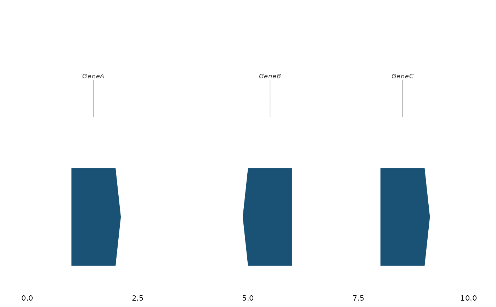

Create a standalone gene annotation panel that can be composed with any ggwas plot using patchwork. Genes are displayed as horizontal bars with optional strand arrows and labels.
Usage
gene_track(
gene_data,
region_chr,
region_start,
region_end,
highlight_genes = NULL,
highlight_color = "#E74C3C",
label_size = 2.5,
track_color = "#1A5276",
show_strand = TRUE,
max_genes = 50
)Arguments
- gene_data
A data.frame with columns: chr, start, end, gene. Optional: strand ("+"/"-").
- region_chr
Chromosome to display (integer or string).
- region_start, region_end
Region boundaries in base pairs.
- highlight_genes
Character vector of gene names to highlight.
- highlight_color
Color for highlighted genes.
- label_size
Text size for gene labels.
- track_color
Default color for gene bars.
- show_strand
If TRUE, draw arrows indicating gene direction.
- max_genes
Maximum number of genes to display. The longest genes are kept when the limit is exceeded.
Value
A ggplot object. Compose with a Manhattan or locus plot using
patchwork::wrap_plots().
Examples
genes <- data.frame(
chr = c(1, 1, 1), start = c(1e6, 5e6, 8e6),
end = c(2e6, 6e6, 9e6), gene = c("GeneA", "GeneB", "GeneC"),
strand = c("+", "-", "+")
)
# Standalone track
gene_track(genes, region_chr = 1, region_start = 0, region_end = 10e6)

# Compose with Manhattan plot
data(example_gwas, package = "ggwas")
p <- locus_plot(example_gwas, region_chr = 1,
region_start = 1e6, region_end = 10e6)
gt <- gene_track(genes, 1, 1e6, 10e6)
if (FALSE) { # \dontrun{
patchwork::wrap_plots(p, gt, ncol = 1, heights = c(0.8, 0.2))
} # }